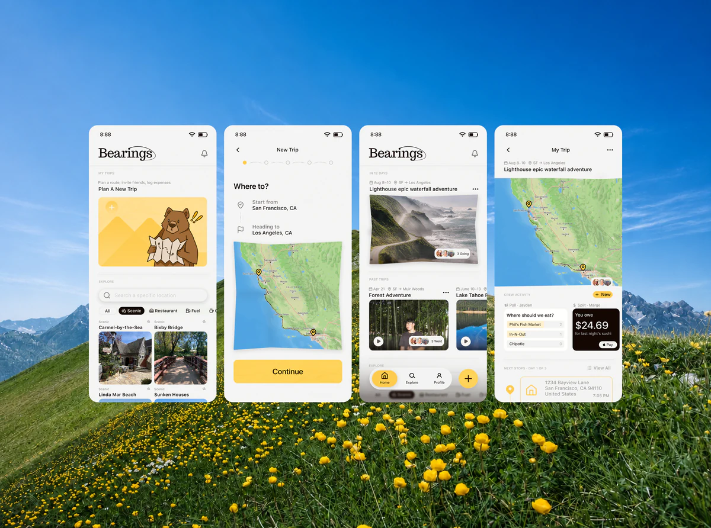
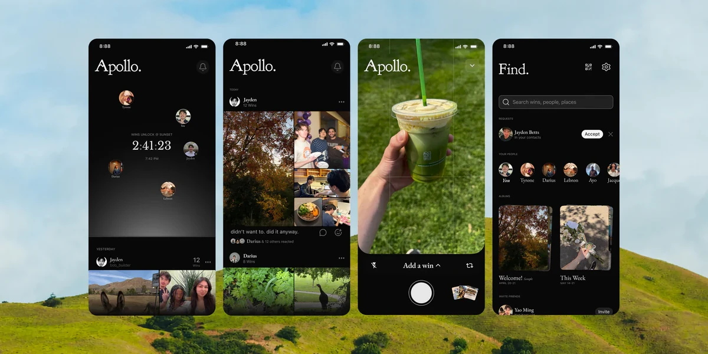
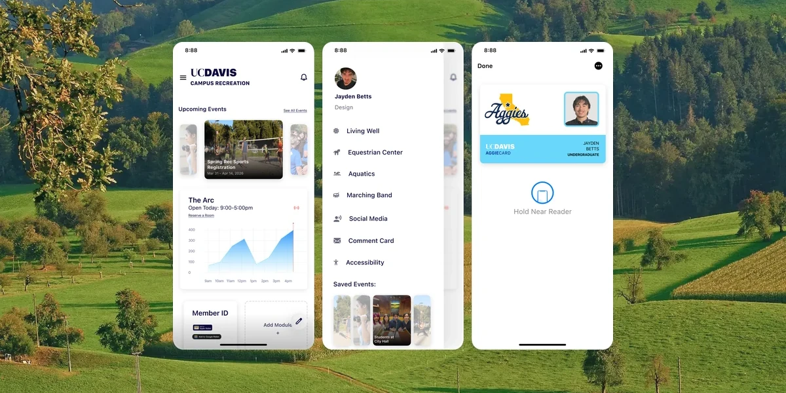
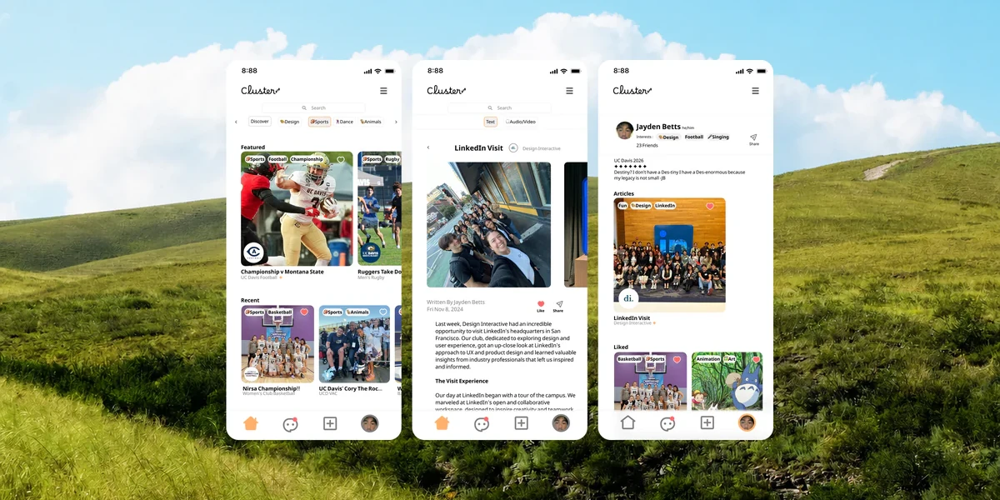

Skip to content
Home
About
Play
Automatic
Off
Pre-dawn
Sunrise
Daytime
Dusk
Sunset
Night
Contact
SF product designer.
iOS, B2C, and design systems.
Role
Problem
Solution
Featured
Case Studies
Extras

Bearings
2026
Audience Choice Award · 5 weeks with 4 designers

Apollo
2026
Founded solo · no streaks, no counts, no color
Bearings
2026
Audience Choice Award · 5 weeks with 4 designers
Apollo
2026
Founded solo · no streaks, no counts, no color

UC Davis Rec Redesign
2026
Member ID in Apple Wallet · killed the login for good
Strata
2025
Designed and built solo, playable on this page

Cluster
2024
Most Innovative · 5 weeks with 3 designers
Play video
Wired to fail
2026
Close
View case study